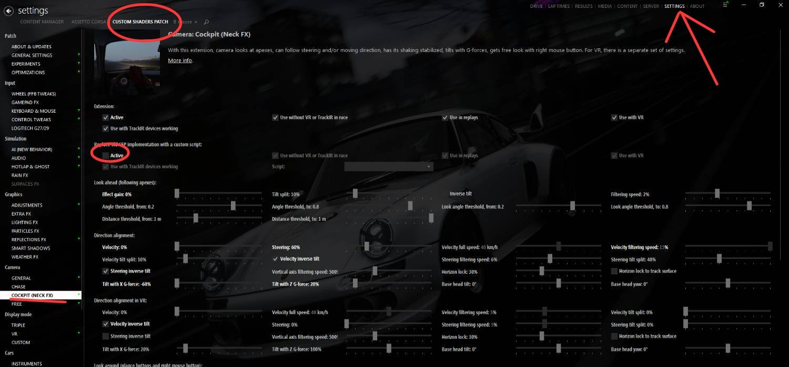

8 · Neck FX
نصب Neck FX
از لینک نصب کنید، Save & Apply بزنید، و در CSP بخش Cockpit (Neck FX) را Active کنید.
-
1
باز کردن لینک نصب
روی لینک زیر بزنید:
باز کردن لینک Neck FXhttps://acstuff.ru/s/VRDXD1اگر دکمه کار نکرد، لینک را کپی و در مرورگر باز کنید.
-
2
Open in Content Manager
گزینه Open in Content Manager را بزنید تا Content Manager باز شود.
-
3
ذخیره و اعمال
وقتی Content Manager باز شد، روی Save & Apply بزنید.
-
4
فعالسازی Cockpit (Neck FX)
در Content Manager این مسیر را باز کنید:
SETTINGS → Custom Shaders Patch → COCKPIT (NECK FX)
تیک Active را برای Replace old CSP implementation with a custom script روشن کنید.

CSP → COCKPIT (NECK FX) → Active SETTINGS بالا راست · تب CUSTOM SHADERS PATCH · منوی COCKPIT (NECK FX) · Active ⚠ نکته اگر Active خاموش باشد، افکت گردن / حرکت سر پک اعمال نمیشود.